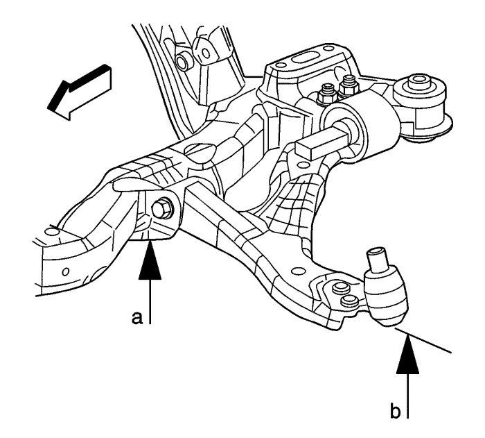
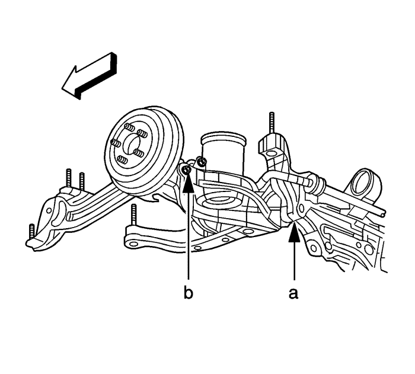

Inspección de la altura del guarnecido
Procedimiento de preparación
La especificación de la altura del guarnecido determina la altura de la carrocería. Una altura de la carrocería incorrecta podría provocar que esta tocase el suelo en los baches. Una altura de la carrocería incorrecta podría causar daños a los componentes de la suspensión y síntomas similares a aquellos que se producen si hay una alineación incorrecta de las ruedas. Mida la altura del guarnecido cuando diagnostique problemas de suspensión y antes de medir la alineación de las ruedas.
Realice los siguientes pasos antes de medir la altura del guarnecido:
- Ajuste la presión de los neumáticos a las especificaciones de presión que aparecen en la placa del neumático.
- Compruebe que los neumáticos coinciden con las especificaciones de tamaño del neumático en la placa del neumático.
- Compruebe que las ruedas coinciden con las especificaciones de tamaño de la rueda en la placa del neumático.
- Compruebe que el depósito de combustible está lleno. Añada peso adicional para simular un depósito lleno, si fuese necesario.
- Compruebe que el maletero está vacío excepto por el neumático de repuesto y por el peso que simula el depósito de combustible lleno.
- Compruebe que el vehículo está en una superficie nivelada como una cremallera de alineación.
- Cierre el capó.
- Cierre las puertas.
- Cierre el portón trasero.
- Compruebe que el vehículo no ha sufrido daños debido a una colisión.
Procedimiento de medición de la altura Z
La medición de la altura Z determina la altura de la carrocería adecuada para la parte delantera del vehículo.
- Utilice sus manos para levantar el parachoques delantero del vehículo hacia arriba aproximadamente 38 mm (1,5 pulg.). Extraiga con cuidado sus manos para dejar que el vehículo se asiente.
- Utilice sus manos para empujar el parachoques delantero del vehículo hacia abajo aproximadamente 38 mm (1,5 pulg.). Extraiga con cuidado sus manos para dejar que el vehículo se asiente.

Importante: Mida verticalmente todas las dimensiones.
- Mida la altura de Z por la parte izquierda y derecha del vehículo en los brazos de apoyo inferiores delanteros.
Mida la distancia vertical desde una línea horizontal que pasa a través del perno de unión del marco (a) a una línea horizontal en la parte inferior de la rótula del brazo de apoyo inferior delantera (b).
- Compare la medición a la especificación. Consultar Especificaciones de altura del guarnecido .
- Si la medición no está a 10 mm (0,39 pulg.) de la especificación, sustituya los muelles delanteros. Consultar Sustitución del refuerzo, componente del refuerzo o muelle .
Procedimiento de medición de la altura D
La medición de la altura D determina la altura de la carrocería adecuada para la parte trasera del vehículo.
- Utilice sus manos para levantar el parachoques trasero del vehículo hacia arriba aproximadamente 38 mm (1,5 pulg.). Extraiga con cuidado sus manos para dejar que el vehículo se asiente.
- Utilice sus manos para empujar el parachoques trasero del vehículo hacia abajo aproximadamente 38 mm (1,5 pulg.). Extraiga con cuidado sus manos para dejar que el vehículo se asiente.

Importante: Mida verticalmente todas las dimensiones.
- Mida la altura de D por la parte izquierda y derecha del vehículo en los brazos de apoyo inferiores traseros.
Mida la distancia vertical desde una línea horizontal que pasa a través del centro del perno de unión de apoyo (a) hasta una línea horizontal que pasa a través del centro del perno de unión de la mangueta (b).
- Compare la medición a la especificación. Consultar Especificaciones de altura del guarnecido .
- Si la medición no está a 10 mm (0,39 pulg.) de la especificación, sustituya los muelles traseros. Consultar Sustitución del muelle helicoidal .
| © Copyright Chevrolet Europe. All rights reserved |